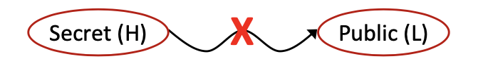
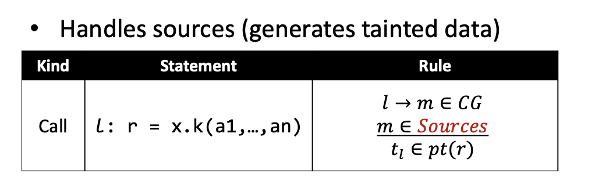
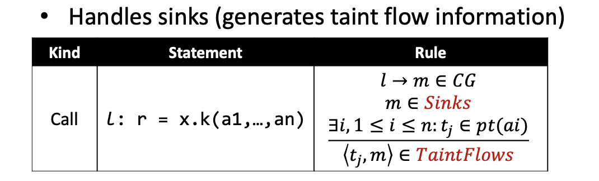

Abstract
同符号执行一样，Taint-Analysis也是分析代码安全漏洞，检测攻击方式的重要手段。对于Web应用程序中存在着的大量安全漏洞,如跨站脚本攻击，SQL注入等~污点分析都可以进行有效地检测。而污点传播技术是当前Taint-Analysis领域的重要课题，通过和静态程序分析技术相结合，在不运行代码且不修改代码的前提下通过分析程序变量之间的相互依赖关系以此获得更高效，更精确的分析结果。
Taint analysis tracks how tainted data flow through the program and observes if they can flow to locations of interest(call sinks).
比如通过利用静态指针分析算法完成简化的显式流explicit flow分析，不讨论路径爆炸和其他动态漏洞分析技术。
Information Flow Security
当服务器和客户机在网络上进行通信的时候就会存在Information Flow，从而产生了相应的安全问题——Prevent unwanted information flow。如何防止客户端的信息不被流入到黑客手中，目前主流有两种途径：
Access Control
通过使用权限的方式来控制程序是否可以访问敏感数据，主要是通过管理如何获取数据的方式来完成数据保护，但是它仅仅可以保证获取时的保护，但是获取到数据之后呢？
Information Flow Security
信息流安全是一种end to end的数据保护方式，它追踪信息流是如何在程序中流动的来确保程序能更安全的处理敏感数据，主要是通过管如何传播数据的方式来完成数据保护。
这两种方式共同作用，才可以真正保证敏感数据的安全。
下面介绍信息流的概念:如果在变量x中的信息被传入到了变量y中，那么在x——>y之间就有信息流。而实现信息流安全实际上还需要两种方式：
security levels
通过将信息流分为不同的等级来控制数据的获取权限，最基本的模型就是two-level policy，分为H和L两个级别，H指的是安全等级高的敏感信息，L指的是敏感信息低的可公开信息。比如
h = getPassword();h为HBroadcast(l);l为L
对于更复杂的数据模型，安全等级实际上可以按照lattice来进行建模。
information flow policy
在不同等级的信息流之间采取不一样的安全策略。比如Noninterference policy规定高级别的信息流数据不可以影响(should not interfere with)低级别的信息流。换句话讲，机器的操作不能使得信息流从高级别的数据传播到低级别的数据中。

这种安全策略需要使得信息流只能沿着lattice的upwards方向进行传播。可以是H——>H、L——>L、L——>H但是不可以是H——>L。
Confidentiality and Integrity
保密性和完整性从另一个视角解读了安全策略information flow policy如何从本质上保证信息流安全。
对于已经分级好的信息，高级别的信息不可以流到低级别的信息中可以看成是为了保密性，防止数据泄露。而低级别的信息也不能流到高级别的信息中可以看成是为了保护数据的完整性。保密性已经介绍过了，这里介绍一下完整性。
Integrity
完整性需要保证一些无关紧要的信息流无法污染，破坏重要的敏感信息。
1 | x = readInput(); //untrusted |
比如一些常见的注入错误基本上都是因为破坏了数据的完整性才导致安全问题：
- Command injection
- SQL injection
- XSS attacks
对于已经分好级别的数据来说，保证安全就是需要在从高级别数据向低级别的信息流中防止泄露的同时，还需要在从低级别数据向高级别数据的信息流中防止污染。确保做到根据不同的信息流向应用不同的信息流安全策略。
从更加广泛的角度来看的话，信息里安全需要保证的是信息的正确性，完整性以及数据的一致性：
- 正确性：高级别的数据防止被污染
- 完整性：数据得到正确存储
- 一致性：保证在读写上数据能保持一致
Explicit Flows and Convert Channels
这里引入两个安全领域常见的概念，显式explicit和隐式implicit。
对于一些基本的信息流传播都是显式的比如:
1 | Xh = Yh; |
可以看到数据都是直接通过赋值或者引用这些显式的修改语句直接进行传播的，成为显示流。而对于下面这些情况：
1 | secret = getSecret(); |
这种情况属于隐式流——即数据的传播都是通过一些被敏感数据控制的if/while语句来完成的。在上面的例子中，public是低级别数据可以直接被观测到，而secret是高级别的敏感数据，但是我们通过观测到public的值是否为1还是0就可以判断出高级别数据的最终值，这就是隐式流传播。
隐式流的数据是通过程序的控制流信息进行传播的。也是安全领域最难以处理的一类安全问题。
Taint Analysis
污点分析是信息流安全领域最常见的检测手段。污点分析将数据分为两种：
tainted data: 整个分析需要关注到的污点数据other data: 其他数据
污点数据的来源被成为sources，从实现角度污点数据通常来自于函数的返回值，即在指针分析需要处理的Call语句。
Taint analysis tracks how tainted data flow through the program and observes if they can flow to locations of interest(called sinks).
污点分析就是通过追踪从sources发出的污点数据是如何在数据流上传播的，并观察这些污点数据是否会流到敏感源中(sinks)。不难看出，污点分析既可以检测高级别的数据是否被泄露——保密性，也可以检测低级别数据是否造成污染——完整性。
而究其本质，污点分析就是在问：污点数据是否可以流到敏感源中——而这和指针分析的目的不谋而合，即污点分析/指针分析的目的都是为了追踪污点数据/抽象对象是如何在程序中传播的：
- Can tainted data flow to a sink?
- Which tainted data a pointer (at a sink)can point to?
Domains and Notations
如何使用指针分析来对污点分析进行建模，只需完成tainted data⟶object,sources⟶ allocation sites这两个映射。
- Variables: x, y ∊ V
- Fields: f, g ∊ F
- Objects: oi，oj ∊ O
- Tainted data: ti，tj ∊ T ⊂ O 污点数据就是在调用点产生的对象中被特殊标记的部分
- Instance fiedls: oi.f, oj.g ∊ O x F
- Pointers: Pointer = V ⋃ (O x F)
- Points-to relations: pt: Pointer ⟶ 𝓟(O)
其中ti代表了从call-site调用点i产生的污点数据。𝓟(O)代表了O的幂集，pt(p)代表了指针变量p的指向集合。
Taint Analysis: Input & Outputs
污点分析的输入为sources——一系列返回值产生污点数据的函数集合，Sinks——一些敏感函数的集合，一旦污点数据流入这些函数将会触发安全问题。
污点分析的输出是TaintFlows:污点数据和Sinks函数的pairs集合。比如<ti, m>表示从call-sites调用点i产生的tainted-data可能会流入sink-method。
Call
整个污点分析需要处理的规则和指针分析大体一致，而对于调用语句Call的处理需要完成两种——sources和sinks的处理，分别用于产生污点数据和产生污点信息流。
Sources

规则的前提是如果调用边集合CG中存在从l到m的一条调用边——l⟶m，而m恰好是sources函数集合中的元素，则需要将该调用语句的指针变量集合pt(r)加上一条污点数据ti。
Sinks

该规则的前提是如果调用边集合CG中存在一条调用边——l⟶m，而m恰好属于sinks函数集合中的元素，而在m的参数中还存在着污点数据集合中的元素tj，则会产生一条TaintFlows从tj到m函数即<tj,m>。
污点分析的学习至此结束。